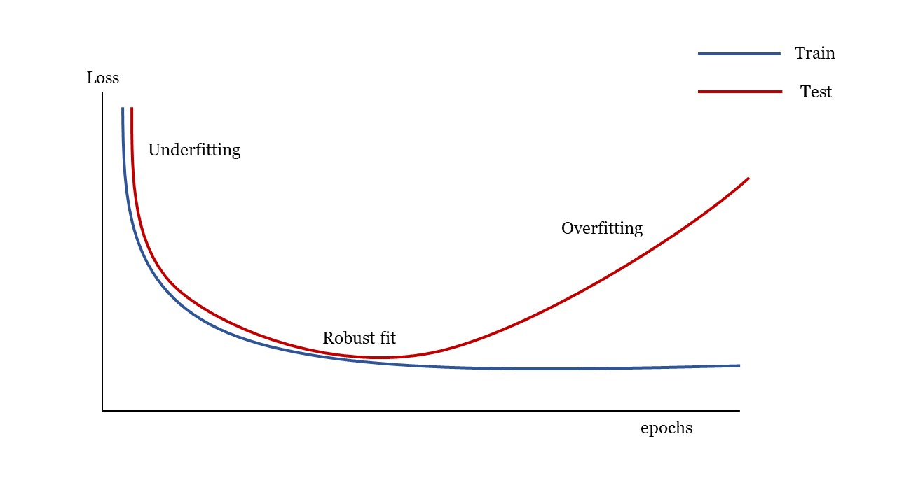
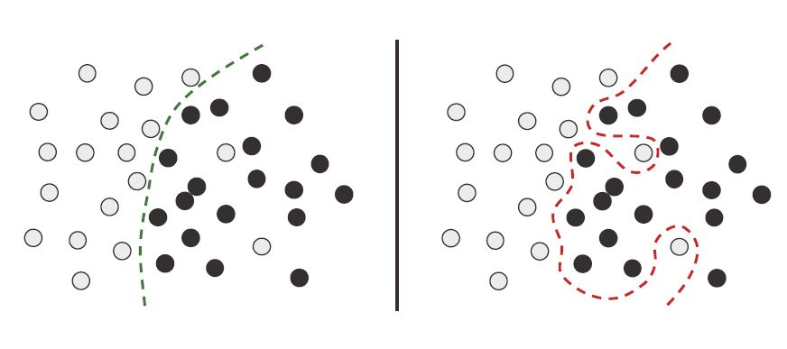
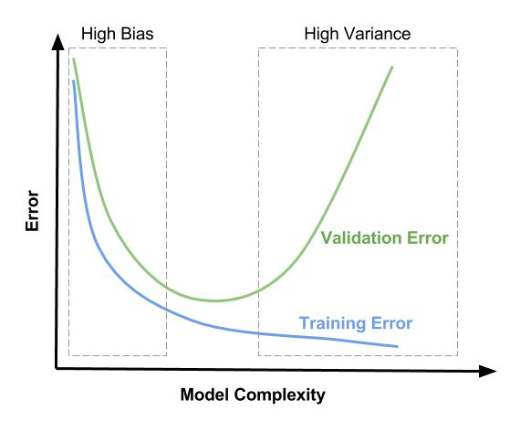
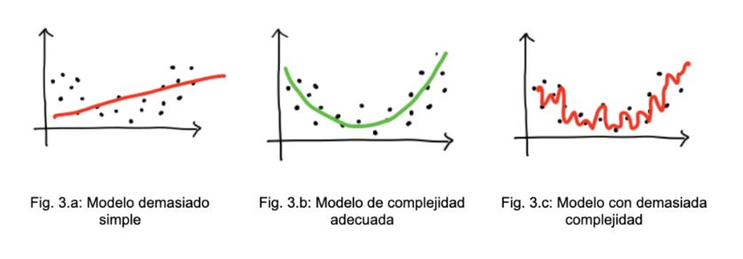

Generalización¶
El problema en aprendizaje automático (Machine Learning) es el balance entre optimización y generalización. La optimización es el proceso de ajustar el modelo para obtener el mejor desempeño posible en el conjunto de train. Este es el aprendizaje del aprendizaje automático. En cambio, la generalización se refiere a qué tan bien se desempeña el modelo entrenado en los datos que nunca había visto.
Así que el objetivo es obtener una buena generalización, pero la generalización no se controla, solo podemos ajustar el modelo al conjunto de train. Si lo hace demasiado bien, el modelo sufre de lo que se denomina sobreajuste (overfitting) y la generalización disminuye.
Underfitting y overfitting:¶

Under-Overfitting¶
En la zona de underfitting el modelo no es apto porque el modelo todavía podría mejorar. La red aún no ha modelado todos los patrones relevantes en el conjunto de train.
El sobreajuste ocurre cuando el modelo es demasiado complejo en relación con la cantidad y el ruido de los datos del conjunto de train.
En la zona de overfitting el Loss del conjunto de test (o de validation en algunos casos) empiezan a degradarse. En este punto la generalización deja de mejorar y es porque el modelo comienza a sobreajustarse. La red está comenzando a aprender patrones que son específicos del conjunto de train, pero que son engañosos o irrelevantes cuando se trata de nuevos datos.
En muchos casos el sobreajuste ocurre cuando los datos son ruidosos que implican incertidumbre o con variables poco comunes.

RobustVsOverfitting¶
Para que un modelo funcione bien, debe entrenarse en una muestra suficientemente densa, en este sentido, el conjunto de train debe cubrir densamente la totalidad de la variedad de los datos de entrada.
La mejor manera de mejorar un modelo de aprendizaje profundo es entrenarlo con más datos o mejores datos. Los datos demasiados ruidosos o inexactos dañarán la generalización. Una cobertura más densa de los datos de entrada producirá un modelo que generaliza mejor.
Cuando no es posible obtener más datos, la mejor solución es agregar restricciones al modelo para que se centre en los patrones más destacados y que tienen más posibilidades de generalizarse bien. Esta es una lucha constante contra el sobreajuste y este proceso se llama regularización.
Bias y varianza:¶
El bias (o sesgo) y varianza son propiedades de un modelo que resultan de la excesiva sencillez o de la alta complejidad del modelo.
Alto bias significa que el modelo es demasiado simple y que solo tiene la capacidad de representar patrones demasiado básicos. El modelo tiene alto error durante el entrenamiento y en la predicción.
Un modelo con alta varianza está demasiado afinado que captura todas las características del conjunto de train, incluido el ruido y la aleatoriedad; sin embargo, al encontrarse datos no vistos produce resultados inesperadamente malos. Estos modelos tienen un bajo error de entrenamiento, pero alto error en el test.
La varianza representa la sensibilidad del modelo a las fluctuaciones en los datos.
El objetivo es encontrar un equilibrio entre bias y varianza para crear modelos que sean sensibles a los patrones de los datos de entrenamiento y al mismo tiempo puedan generalizar a nuevos datos no vistos.
La siguiente figura muestra el comportamiento del bias y varianza con respecto a la complejidad del modelo.

Bias-varianza¶
El aumento de la complejidad de un modelo generalmente aumentará su varianza y reducirá su bias. Por el contrario, reducir la complejidad de un modelo aumenta su bias y reduce su varianza.

Bias-varianza-2¶